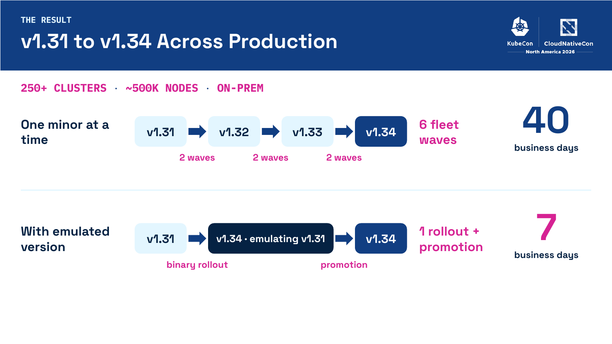
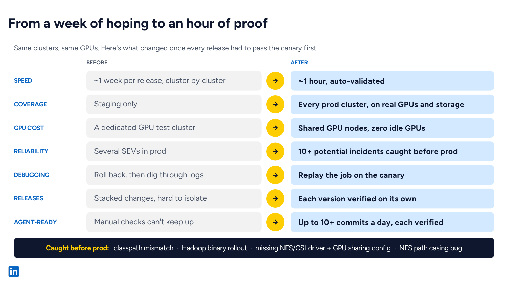

LinkedIn runs 250+ clusters on rails:
40 days became 7, and a week became an hour.


40 → 7
business days for three Kubernetes minors: one rollout and a promotion
1 wk → 1 h
per release, auto-validated; 10+ potential incidents caught before prod
The skip-level upgrade ran on LinkedIn’s own tooling: check kubeadm and Cluster API support for emulated versions before we promise it.